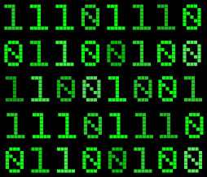

INFORME
El lenguaje de los computadores es binario y se representa con 1 y 0, la información la manejan a partir de la combinación de estos dos números, el dev c++, es un traductor del código binario y lenguaje humano, esto se puede hacer gracias a la sintaxis.En la lengua, la sintaxis es el conjunto de normas y leyes combinatorias que estructuran la construcción de oraciones y textos. En las ciencias de la computación, la sintaxis comprende un concepto equivalente.En programación, existen tres variables relevantes: la sintaxis, la semántica y la jerarquía.
La primera tiene que ver con que un lenguaje de programación de un software o aplicación puede entenderse como una serie de caracteres en particular en combinación. La sintaxis viene a estar compuesta de las reglas que determinan si dicha combinación o "string" es válida o no y, por lo tanto, operativa.

lAS VARIABLES
Son cajones o espacios donde pueden guardar información numérica y letra, hay tipos de variables, las principales son: el tipo “int”, el tipo “string”, tipo “floate”, los tipos “boolean”, tipo “char”, y muchas más.
int: números enteros.
char: caracteres y letras.
boolean: binarios 1 y 0.
string: cadenas de caracteres.
floate: números con decimal.